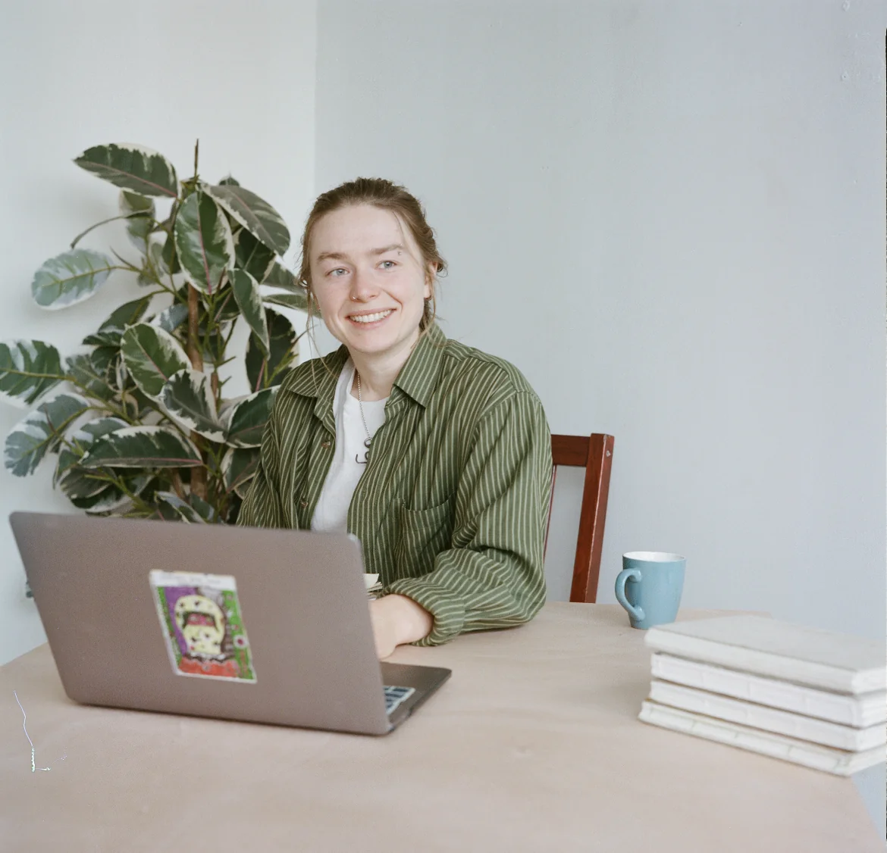

I find your unique tone and style in order to write...
- Website copy
- Newsletters and workshops descriptions
- Articles and blogs
- Editing and proofreading
- Funding applications
- Creative writing
What you else you get from working with me (aside from great text)
Clarity
A chance to externalise messy thoughts and make sense together
Fresh perspective
An outside brain to challenge your assumptions and sound board new ideas with
Confidence in your output
Get away from chatGPT to take more ownership over your work
How I work
Gather and understand
I start by getting to know you and the project deeper through socratic style conversation and questionnaire. I gather research from articles and the material you provide me, visualising it through mind maps, drawings, diagrams and word banks - ready to take into the next stage.
Writing
Writing starts on paper - this helps me get loose and find a voice that feels conversational rather than corporate. In a document I start threading in all the concepts and phrases from the gathering phase. The challenge is to structure (often complex) ideas clearly while making them stilsound natural and fluid.
Delivery
After a round or two of editting, that initial swarm of ideas has found a coherent form, full of quirks and details that make it feel like you.
"Miche has an ease for finding the words that can connect and reveal the essence of things, even when dealing with complex ideas. Her perspective comes, I think, from a constant desire to understand beyond what is immediately apparent."
Leny Garcia, Business Strategist, Rocoto Berlin
"What stands out to me about Miche is the way she structures her work with intentionality and thoughtfulness. She is never short of fresh ideas that she is able to implement under time constraints in a way where the end result always feels worthwhile."
Sascha Sandor, Artist
My services
Brand Writing
Working with freelancers, solo entrepreneurs and small businesses convey their work clearly and write interesting content (newsletters people will actually want to read!)
Creative Writing
Building worlds and weaving concepts into stories for filmmakers, artists and cultural workers for film, publication and exhibitions.
Hi, I'm Miche!

I am the copywriter for people who want to do more than just sell.
For people who share the feeling that we need something else in the world right now, even if we are not sure what that something else is yet. For people who believe we need to try anyway.
I am an artist, musician and writer, raised in the UK and based in The Netherlands. I care deeply about the ideas we have and believe we need good ideas more than ever to face the many crises we are living through.
Writing for me is the vessel that can carry these ideas into the world. I aspire to write words that make people and structures move. That are sticky and contagious and irresistible, so that our ideas can travel and take root outside of ourselves.
Get in touch hereFrequently asked questions
How much does it cost?+
My costs vary depending on who I am working with and the scope of the project. Sometimes I adjust my prices to what you can pay, in order to give more people access to copywriting services. Get in touch for a quote.
Why do I need a copywriter?+
Can't I just use AI?+
What do you need from me?+
When I start working with a new client, on a website, a workshop concept or other project, I usually ask for the following things:
- Examples of previous or existing copy (from websites or other material) so I can get an idea of the voice and style you are already using.
- More info about yourself, organisation or business (usually from a website or CV).
- An outline of the project you need copy for. This can be a messy and unformulated document of thoughts. In fact, I prefer to receive a document written in your own, unedited voice than something that has already passed through ChatGPT.
- I send you a questionnaire to fill out with questions about the intention and goal of your project, the tone you are aiming for and the practicalities the text needs to fulfill.
Then I get started!
I'm ready to get started.
Reach me through the form below and let's see how we can work together. I’d love to hear from you.